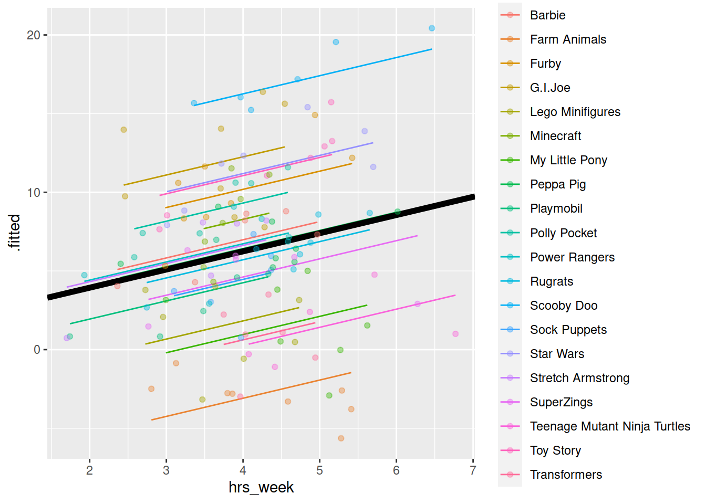

Introducing Mixed Effects Models
Some background reading
Preliminaries
- Open Rstudio, and create a new project for this course!!
- Create a new RMarkdown document (giving it a title for this week).
A Note on terminology
The methods we’re going to learn about in the first five weeks of this course are known by lots of different names: “multilevel models”; “hierarchical linear models”; “mixed-effect models”; “mixed models”; “nested data models”; “random coefficient models”; “random-effects models”; “random parameter models”… and so on).
What the idea boils down to is that model parameters vary at more than one level. This week, we’re going to explore what that means.
New Toys!
These are the main packages we’re going to use in this block. It might make sense to install them now if you do not have them already (note, the rstudio.ppls.ed.ac.uk server already has lme4 installed for you).
- tidyverse
- lme4
- effects
- broom
- broom.mixed
](images/intro/reading.png)
Let us know broaden our scope to the investigation of how practice affects reading age for all toys, (not just Playmobil characters).
You can find a dataset at https://uoepsy.github.io/data/toyexample.csv
toys_read <- read_csv("https://uoepsy.github.io/data/toyexample.csv")
| variable | description |
|---|---|
| toy_type | Type of Toy |
| toy | Character |
| hrs_week | Hours of practice per week |
| age | Age (in years) |
| R_AGE | Reading Age |
Linear model refresh
Recall that in the course last semester we learned all about the linear regression model:
\[ \begin{align}\\ & \text{for observation }i \\ & \color{red}{Y_i} = \color{blue}{\beta_0 \cdot{} 1 + \beta_1 \cdot{} X_{1i} \ + \ ... \ + \ \beta_p \cdot{} X_{pi}} + \varepsilon_i \\ \end{align} \]
And if we wanted to write this more simply, we can express \(X_1\) to \(X_p\) as an \(n \times p\) matrix (samplesize \(\times\) parameters), and \(\beta_0\) to \(\beta_p\) as a vector of coefficients:
\[ \mathbf{y} = \boldsymbol{X\beta} + \boldsymbol{\varepsilon} \quad \\ \text{where} \quad \varepsilon \sim N(0, \sigma) \text{ independently} \]
Plot the bivariate relationship between Reading Age and Hrs per Week practice, and then fit the simple linear model: \[ \text{Reading Age} \sim \beta_0 + \beta_1 \cdot \text{Hours per week practice} + \varepsilon \]
Thinking about the assumption we make about our model:
\[
\text{where} \quad \varepsilon \sim N(0, \sigma) \text{ independently}
\]
Have we satisfied this assumption (specifically, the assumption of independence of errors)? Our model from the previous question will assume that the residuals for all toys are independent of one another. But is this an assumption we can make? Might we not think that the Playmobil characters could be generally better at reading than the Power Rangers? Or even that ScoobyDoo figurines might be more receptive to practice than the Sock Puppets are?
The natural grouping of the toys introduces a level of dependence, which we would be best to account for.
Try running the code below.
ggplot(data = toys_read, aes(x=hrs_week, y=R_AGE))+
geom_point()+
geom_smooth(method="lm",se=FALSE)Then try editing the code to include an aesthetic mapping from the type of toy to the color in the plot.
How do your thoughts about the relationship between Reading Age and Practice change?
We can consider the simple regression model (lm(R_AGE ~ hrs_week, data = toys_read)) to “pool” the information from all observations together.
We’ll call this Complete Pooling.
In the ‘Complete Pooling’ approach, we simply ignore the natural clustering of the toys, as if we were unaware of it. The problem is that this assumes the same regression line for all toy types, which might not be that appropriate:
Figure 2: Complete pooling can lead to bad fit for certain groups
There are various ways we could attempt to deal with the problem that our data are in groups (or “clusters”).2 With the tools you have learned in the USMR course last semester, you may be tempted to try including toy type in the model as another predictor, to allow for some toy types being generally better than others:
lm(R_AGE ~ hrs_week + toy_type, data = toys_read)Or even to include an interaction to allow for toy types to respond differently to practice:
lm(R_AGE ~ hrs_week * toy_type, data = toys_read)We might call this approach the No Pooling method, because the information from each cluster contributes only to an estimated parameter for that cluster, and there is no pooling of information across clusters. This is a good start, but it means that a) we are estimating a lot of parameters, and b) we are not necessarily estimating the parameter of interest (the overall effect of practice on reading age). Furthermore, we’ll probably end up having high variance in the estimates at each group.
So what if we could do something in between?… “Partial Pooling” perhaps?
Introducing MLM
Multilevel models take the approach of allowing the groups/clusters to vary around our \(\beta\) estimates.
In the lectures, we saw this as:
\[ \begin{align} & \text{for observation }j\text{ in group }i \\ \quad \\ & \text{Level 1:} \\ & \color{red}{Y_{ij}} = \color{blue}{\beta_{0i} \cdot 1 + \beta_{1i} \cdot X_{ij}} + \varepsilon_{ij} \\ & \text{Level 2:} \\ & \color{blue}{\beta_{0i}} = \gamma_{00} + \color{orange}{\zeta_{0i}} \\ & \color{blue}{\beta_{1i}} = \gamma_{10} + \color{orange}{\zeta_{1i}} \\ \quad \\ & \text{Where:} \\ & \gamma_{00}\text{ is the population intercept, and }\color{orange}{\zeta_{0i}}\text{ is the deviation of group }i\text{ from }\gamma_{00} \\ & \gamma_{10}\text{ is the population slope, and }\color{orange}{\zeta_{1i}}\text{ is the deviation of group }i\text{ from }\gamma_{10} \\ \end{align} \]
We are now assuming \(\color{orange}{\zeta_0}\), \(\color{orange}{\zeta_1}\), and \(\varepsilon\) to be normally distributed with a mean of 0, and we denote their variances as \(\sigma_{\color{orange}{\zeta_0}}^2\), \(\sigma_{\color{orange}{\zeta_1}}^2\), \(\sigma_\varepsilon^2\) respectively.
The \(\color{orange}{\zeta}\) components also get termed the “random effects” part of the model, Hence names like “random effects model,” etc.
Fitting MLMs
Introducing lme4
We’re going to use the lme4 package, and specifically the functions lmer() and glmer().
“(g)lmer” here stands for “(generalised) linear mixed effects regression.”
We write the first bit of our formula just the same as our old friend the normal linear model y ~ 1 + x + x2 + ..., where y is the name of our outcome variable, 1 is the intercept (which we don’t have to explicitly state as it will be included anyway) and x, x2 etc are the names of our explanatory variables.
But let us suppose that we wish to model our intercept not as a fixed constant, but as varying randomly according to some grouping around a fixed center. This would fit the model:
\[
\begin{align}
& \text{Level 1:} \\
& \color{red}{Y_{ij}} = \color{blue}{\beta_{0i} \cdot 1 + \beta_{1} \cdot X_{ij}} + \varepsilon_{ij} \\
& \text{Level 2:} \\
& \color{blue}{\beta_{0i}} = \gamma_{00} + \color{orange}{\zeta_{0i}} \\
\end{align}
\]
With lme4, we now have the addition of these such random effect terms, specified in parenthesis with the | operator (the vertical line | is often found to the left of the z key on QWERTY keyboards).
We use the | operator to separate the parameters (intercept, slope etc.) on the LHS, from the grouping variable(s) on the RHS, by which we would like to model these parameters as varying.
g below)y ~ 1 + x + (1|g)
y~x to vary between groups:y ~ 1 + x + (1 + x|g)
Estimation problems
For large datasets and/or complex models (lots of random-effects terms), it is quite common to get a convergence warning. There are lots of different ways to deal with these (to try to rule out hypotheses about what is causing them).
For now, if lmer() gives you convergence errors, you could try changing the optimizer. Bobyqa is a good one: add control = lmerControl(optimizer = "bobyqa") when you run your model.


Fitting some models
Using lmer() from the lme4 package, fit a model of practice (hrs_week) predicting Reading age (R_AGE), with by-toytype random intercepts.
Pass the model to summary() to see the output.
Sometimes the easiest way to start understanding your model is to visualise it.
Load the package broom.mixed. Along with some handy functions tidy() and glance() which give us the information we see in summary(), there is a handy function called augment() which returns us the data in the model plus the fitted values, residuals, hat values, Cook’s D etc..
library(broom.mixed)
rmodel1 <- lmer(R_AGE ~ hrs_week + (1 | toy_type), data = toys_read)
augment(rmodel1)## # A tibble: 132 x 14
## R_AGE hrs_week toy_type .fitted .resid .hat .cooksd .fixed .mu .offset
## <dbl> <dbl> <fct> <dbl> <dbl> <dbl> <dbl> <dbl> <dbl> <dbl>
## 1 9.31 3.84 Furby 10.0 -0.701 0.122 7.75e-3 6.06 10.0 0
## 2 12.2 4.88 Toy Story 12.1 0.105 0.142 2.14e-4 7.26 12.1 0
## 3 8.08 3.48 Stretch A… 6.02 2.06 0.192 1.25e-1 5.64 6.02 0
## 4 9.08 3.68 Peppa Pig 6.05 3.03 0.126 1.52e-1 5.87 6.05 0
## 5 2.07 2.96 Lego Mini… 0.621 1.45 0.146 4.20e-2 5.04 0.621 0
## 6 10.2 3.71 G.I.Joe 11.9 -1.67 0.122 4.41e-2 5.91 11.9 0
## 7 8.05 3.73 Minecraft 7.97 0.0730 0.139 9.96e-5 5.94 7.97 0
## 8 11.6 4.59 Polly Poc… 9.99 1.60 0.172 6.42e-2 6.92 9.99 0
## 9 12.3 4.01 Star Wars 11.2 1.13 0.140 2.40e-2 6.25 11.2 0
## 10 5.06 4.37 Sock Pupp… 4.89 0.171 0.163 6.78e-4 6.67 4.89 0
## # … with 122 more rows, and 4 more variables: .sqrtXwt <dbl>, .sqrtrwt <dbl>,
## # .weights <dbl>, .wtres <dbl>Add to the code below to plot the model fitted values, and color them according to toy type.
(you may need to edit rmodel1 to be whatever name you assigned to your model).
augment(rmodel1) %>%
ggplot(aes(x = hrs_week, y = ......
For our \(\beta\) estimates from a multilevel model, we can use fixef().
fixef(rmodel1)## (Intercept) hrs_week
## 1.627422 1.154725Can you add to the plot in the previous question, a thick black line with the intercept and slope given by fixef()?
Hint: geom_abline()
By now, you should have a plot which looks more or less like the below. We have added on the raw data too (the points).

Let’s try to map the parts of the plot to the summary() output of the model.
Match the coloured sections in the image below to the descriptions A through D.
- where the black line cuts the y axis
- the standard deviation of the distances from all the individual toy types lines to the black line.
- the slope of the black line
- the standard deviation of the distances from all the individual observations to the line for the toy type to which it belongs.

Figure 5: Summary model output, lmer(R_AGE~hrs_week + (1|toy_type), data = toys_read)
Can you know map those same coloured sections in Figure 5 to the mathematical terms in the model equation:
\[ \begin{align} & \text{Level 1:} \\ & \color{red}{ReadingAge_{ij}} = \color{blue}{\beta_{0i} \cdot 1 + \beta_{1} \cdot Practice_{ij}} + \varepsilon_{ij} \\ & \text{Level 2:} \\ & \color{blue}{\beta_{0i}} = \gamma_{00} + \color{orange}{\zeta_{0i}} \\ \quad \\ & \text{where} \\ & \color{orange}{\zeta_0} \sim N(0, \sigma_{\color{orange}{\zeta_{0}}}) \text{ independently} \\ & \varepsilon \sim N(0, \sigma_{\varepsilon}) \text{ independently} \\ \end{align} \]
Fit a model which allows also (along with the intercept) the effect of practice (hrs_week) to vary by-toytype.
Then, using augment() again, plot the model fitted values. What do you think you will see?
Plot the model fitted values but only for the Farm Animals and the Scooby Doo toys, and add the observed reading ages too.
Do this for both the model with the random intercept only, and the model with both the random intercept and slope.
Some Less Guided Exercises
While the toy example considers the groupings or ‘clusters’ of different types of toy, a much more common grouping in psychological research is that of several observations belonging to the same individual. One obvious benefit of this is that we can collect many more observations with fewer participants, and account for the resulting dependency of observations. Another very crucial advantage is that we can use the same methods to study how people change over time.
Load the data, and take a look at what is in there. Hopefully it should match the description above.
Q: Overall, did the participants maintain their weight loss or did their weights change?
Each of our participants have measurements at 4 assessments. We need to think about what this means for our random effect structure. Would we like our models to accommodate individuals to vary in their starting weight change, to vary in their weight change over the course of the assessment period, or both?
To investigate whether weights changed over the course of the assessments, or whether they stayed the same, we can fit and compare 2 models:
- The “null” or “intercept-only” model.
- A model with weight change predicted by assessment.
Hint: You can compare two lmer() models the same way you would compare two lm() models in R. However, note that the output will not give you an F-ratio, but a Chisq. This is because instead of comparing the residual sums of squares, we are comparing the model deviance (or \(-2 \times \text{LogLikelihood}\) of our model). This is what is known as a likelihood ratio test (LRT).
Q: Did the experimental condition groups differ in overall weight change and rate of weight change (non-maintenance)?
Hint: It helps to break it down. There are two questions here:
- do groups differ overall?
- do groups differ over time?
We can begin to see that we’re asking two questions about the Condition variable here: “is there an effect of Condition?” and “Is there an interaction between Assessment and Condition?”
Try fitting two more models which incrementally build these levels of complexity, and compare them (perhaps to one another, perhaps to models from the previous question - think about what each comparison is testing!)
We saw that we can get the coefficients using fixef(model).
We can also use tidy(model), and similar to last semester, we can pull out the bit of the summary() using:
summary(model)$coefficientsFrom your model from the previous question which investigates whether conditions differed over in their rate of weight change, can you state how the conditions differed?
Make a graph of the model fit and the observed data.
Hint: There are lots of ways you can do this, try a couple:
- Using the effects package, does this help?
as.data.frame(effect("Assessment:Condition", model))
- Using
fitted(model) - Using
augment()from the broom.mixed package.


Examine the parameter estimates and interpret them (i.e., what does each parameter represent?)
m.full <- lmer(WeightChange ~ Assessment*Condition + (Assessment | ID),
data=WeightMaintain3)
summary(m.full)
Image sources:
http://tophatsasquatch.com/2012-tmnt-classics-action-figures/
https://www.dezeen.com/2016/02/01/barbie-dolls-fashionista-collection-mattel-new-body-types/
https://www.wish.com/product/5da9bc544ab36314cfa7f70c
https://www.worldwideshoppingmall.co.uk/toys/jumbo-farm-animals.asp
https://www.overstock.com/Sports-Toys/NJ-Croce-Scooby-Doo-5pc.-Bendable-Figure-Set-with-Scooby-Doo-Shaggy-Daphne-Velma-and-Fred/28534567/product.html
https://tvtropes.org/pmwiki/pmwiki.php/Toys/Furby
https://www.fun.com/toy-story-4-figure-4-pack.html
https://www.johnlewis.com/lego-minifigures-71027-series-20-pack/p5079461↩︎An approach more common in Econometrics is to use “cluster robust variance estimates” but this is much less common in psychology, and not without their problems, so we will not discuss these in this course↩︎